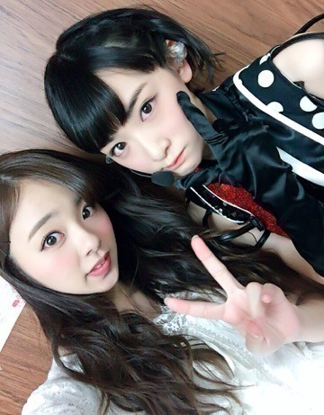
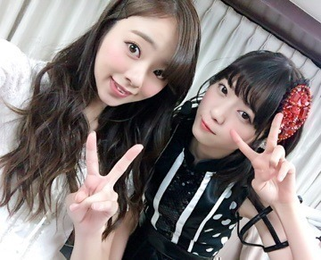
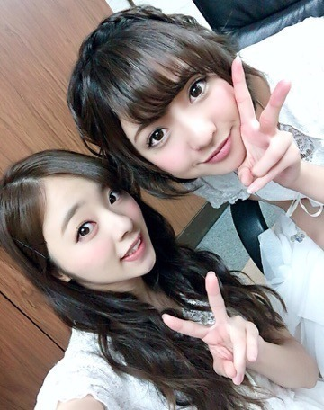

改めまして、
あけましておめでとうございます！
川村まひろです♡♡♡
2016年，初夢は覚えておりません！笑
でも初詣で引いたおみくじは「1番」「大吉」...それだけは覚えとる．
ぅんぅん やっぱりね...♡笑
今年に入った瞬間思ったのよ^ ^笑ノ
今年は絶対楽しい一年になる，って事が．笑
なんかね、自分にとってすごい大事な年になるんじゃないかな？って思います^ ^♡
とりあえず去年一年過ごしてみて分かったことがあるのよ。「ポジティブ」って正義だな...って♡笑、、、
今年は今まで以上に沢山笑って沢山泣いて，乃木坂46としても，川村まひろ個人としてもおもいっっっきり飛躍できる年になります様に...。
今年は成人ですしね、、♡
今年の成人はそれぞれ個性が強い...笑
そんな成人ちゃんとの写真貼ります．

んにゃ♡
はい，，，
なんだなんだ...笑
書くことが沢山あるからなのか何書いたらいいか分からなくなってきたよ、、笑♡
今年はとりあえずアンダーライブの全国ツアーが楽しみ過ぎて、、、(#^.^#)ぇへへ
地方から応援してくださっているファンの皆さんの為にも，いいものを作って最高のライブにしたいな...と今から考えています♡ぁはは
気が早いかな？
でも本当に地方に回れる嬉しさははんぱないんですよ．笑
自分も地方出身だから余計かな？
私は七瀬とさゆりんと同じ大阪です♡♡

ぁ、毎月10日発売のヤングギターですが 今月は9日発売です！ チェックの方よろしくお願いしますぅ⊂((・x・))⊃
はい♡
という事でまたblog更新しますね．ノ
